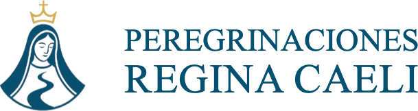

Peregrinaciones católicas a los lugares donde la fe se hizo historia y la gracia dejó huella.
Monterrey, Nuevo León, México.
Hay lugares que se visitan.
Y hay lugares que se peregrinan.
Un viaje puede llevarte a conocer un lugar. Una peregrinación puede llevarte a encontrarte con algo mucho más profundo. Por eso no hacemos simplemente viajes religiosos: creamos experiencias de peregrinación.
Qué es Regina Caeli, y qué significa ponerse en camino.
Peregrinaciones Regina Caeli es una obra católica nacida en Monterrey, Nuevo León, dedicada a conducir peregrinos a los grandes lugares de la fe cristiana. Diseñamos y acompañamos experiencias que integran formación, oración, liturgia, contemplación, cultura, belleza y comunidad, para que el peregrino pueda entrar en contacto con la memoria viva de la Iglesia y descubrir en ella una invitación a renovar su propia vida.
Peregrinar es ponerse en camino, y la vida cristiana también es un camino. Salimos de nuestra rutina. Dejamos atrás, por unos días, aquello que conocemos. Caminamos. Buscamos. Contemplamos. Rezamos. Escuchamos. Y regresamos. Pero la verdadera pregunta no es solamente qué vimos, sino qué quiere Dios mostrarme.
De dónde viene el nombre, y por qué caminamos con ella.
María sabe de caminos. Supo escuchar la voz de Dios. Supo confiar. Supo ponerse en camino. Supo guardar los misterios en su corazón. Y supo permanecer junto a Cristo.
Por eso caminamos con ella. No porque María sea el destino último de nuestra peregrinación, sino porque ella siempre nos conduce hacia su Hijo. Bajo su guía queremos aprender a caminar con fe, contemplar con profundidad y regresar a nuestra vida cotidiana con un corazón renovado.
Los grandes ejes de nuestras peregrinaciones.
No trabajamos con un calendario fijo de salidas. Reunimos a quienes quieren peregrinar, y cuando el grupo se forma, el grupo elige su destino. Podemos ir a cualquier lugar vinculado con la fe católica.
Si tienes un destino en el corazón, escríbenos. Puede ser el comienzo de un grupo.
Una peregrinación Regina Caeli comienza antes de abordar un avión.
Porque regresar a casa también es parte de peregrinar.
Qué hace diferente a Regina Caeli.
Se camina. Se conversa. Se comparte la mesa. Se ríe. Se espera. Se ayuda. Se cansa uno. Se descubre. Se reza. Y poco a poco, quienes comenzaron siendo desconocidos pueden convertirse en compañeros de camino. Una peregrinación no solamente te lleva a un lugar: puede llevarte al encuentro con otros.
No buscamos turistas. Buscamos peregrinos.
Una fotografía puede conservar un momento. Una peregrinación puede convertirse en parte de la historia de una familia: el lugar donde rezaron juntos, la Misa que vivieron, el santo cuya historia descubrieron, el camino que recorrieron, la conversación que tuvieron, la fe que compartieron. Porque algunas experiencias no solamente crean recuerdos: crean memoria espiritual.
Un peregrino es alguien que se pone en camino con una pregunta. Puede ser una pregunta sobre Dios. Sobre su familia. Sobre su vocación. Sobre su vida. Sobre su futuro. O simplemente: ¿qué quieres de mí, Señor? No importa cuál sea tu punto de partida. Lo importante es estar dispuesto a caminar.
Lo que no prometemos, y lo que no confundimos.
No prometemos:
No confundimos:
Regina Caeli prepara, acompaña y dispone. Dios es quien actúa en cada persona. Por eso no queremos que el peregrino regrese diciendo únicamente «qué bonito viaje», sino que pueda decir: algo en mí cambió.
Lo que más nos preguntan antes de dar el primer paso.
Todo camino empieza con un primer paso. Aquí está el nuestro.
Peregrinaciones Regina Caeli nace del deseo de recuperar la profundidad de la peregrinación cristiana y ponerla al servicio de personas, familias y comunidades. Desde México hacia el mundo. De los lugares santos hacia la vida cotidiana. Del camino exterior hacia el encuentro interior.
El resto del ecosistema.
Regina Caeli · Caminemos hacia el Cielo, guiados por María.
Quiero peregrinar